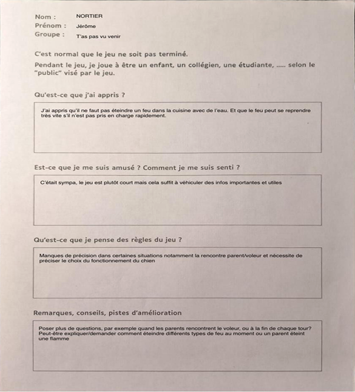

Qui sommes-nous?
Nous sommes un groupe de trois étudiants passionnés par l’univers des jeux de société et la création de concepts innovants.
Dans le cadre de notre projet académique à l'École universitaire de physique et d'ingénierie, nous avons décidé de concevoir un jeu de plateau unique, mêlant stratégie, amusement et réflexion.
Ce projet, bien plus qu’une simple mission scolaire, est pour nous une aventure créative et collective qui nous permet de combiner nos compétences et nos passions.
L'origine de l'idée
Où et quand tout a commencé ?
L’idée de ce projet a vu le jour à École Universitaire de Physique et d'Ingénierie , lors d'un cours de Gestion de Projet en Novembre 2024. Au départ, plusieurs choix de projets étaient envisagés, mais nous avons finalement opté pour le thème de la sécurité, en particulier la sécurité incendie. C’est au cours d’une discussion entre nous trois, autour de notre volonté de créer quelque chose d’utile et pertinent, que l’idée a émergé.
Nous avons rapidement compris que ce projet serait une excellente occasion de mettre à l'épreuve nos compétences respectives tout en explorant les mécanismes du design, de la gestion des risques, de la stratégie et de la communication. Ce fut aussi une chance pour nous de travailler main dans la main et d’apprendre de l’expérience de nos enseignants et de nos pairs.
Notre équipe
Les créateurs du jeu
Nous sommes trois étudiants, chacun issu d’une filière différente, mais unis par notre désir commun de concevoir un jeu captivant. Tout au long de ce projet, nous avons travaillé en étroite collaboration sur chaque aspect du jeu, en mettant à profit nos compétences respectives pour créer un produit final cohérent et réussi.
- Cherifa OUSADANE , Owen FAILLER et Welcom Beraldo MOUSSOUNGOU – Création du design, de la mécanique et de la communication : Ensemble, nous avons conçu l’univers graphique, les cartes, les pions, et l’illustration du plateau, tout en développant les règles et la dynamique du jeu. Nous avons travaillé main dans la main pour équilibrer les mécaniques de jeu, créer une expérience immersive et stratégique et nous assurer que le gameplay soit fluide et captivant. Nous avons également pris en charge la promotion et l’organisation des sessions de test pour rendre notre projet visible et fonctionnel.
- Encadrement académique
Nous avons eu la chance d’être encadrés par les enseignants M. Adrian couvent , M. Samuel BRAIKEH et M. Iman PENDELIAU, experts dans leurs domaines respectifs. Ils nous ont guidés tout au long de ce projet, en nous apportant leurs précieux conseils et en nous soutenant dans chaque étape de la création du jeu. Leur expertise en gestion de projet, en conception et en développement a été essentielle pour nous permettre de surmonter les défis et d’affiner nos idées, contribuant ainsi à la réussite de ce projet.
Notre projet
La création du jeu
Le jeu que nous avons conçu est Coup du siècle , un jeu de plateau utilisant des cartes, où les joueurs sont confrontés à des situations de sécurité incendie. Leur objectif est de collaborer pour identifier les risques, prendre des décisions stratégiques et sauver des vies dans des scénarios simulés de sécurité incendie.
Dès le début, notre objectif était de créer un jeu qui soit à la fois stratégique et accessible, permettant à la fois de faire preuve d’intelligence tactique et de profiter d’un moment de convivialité. Destiné principalement aux lycéens et collégiens, Coup du siècle vise à sensibiliser aux principes de la sécurité incendie tout en offrant une expérience de jeu agréable et éducative.
Les tests du projet
Afin de garantir la qualité et la fluidité de notre jeu, nous avons mis en place plusieurs phases de tests tout au long du développement. Ces tests ont permis d’ajuster les mécaniques de jeu, d’identifier les zones d’amélioration et de nous assurer que l’expérience de jeu soit cohérente et divertissante.
Nous avons organisé des sessions de test avec différents groupes pour recueillir des retours variés et améliorer le jeu en fonction des besoins des joueurs. Ces retours ont été essentiels pour finaliser les règles, l’équilibre du jeu et l’aspect visuel.
Fiche d'Évaluation remplie par Jérôme NORTIER
Voici la fiche d’évaluation remplie par Jérôme, un de nos testeurs, qui a joué à Coup du siècle lors de nos sessions de test. Ces retours ont été cruciaux pour nous permettre d'ajuster et d'améliorer notre jeu.
Améliorations Basées sur les Tests
Après avoir soumis notre jeu à une phase de tests approfondis auprès de nos camarades et d'autres testeurs, nous avons pris le temps d'analyser leurs retours et suggestions. Ces tests nous ont permis d’identifier les points forts du jeu, mais aussi les aspects qui nécessitaient des ajustements. En tenant compte des résultats des tests, nous avons apporté plusieurs améliorations :
Pour consulter les règles de notre jeu, cliquez ici.
Un projet académique, mais plus encore
Ce projet représente bien plus qu’un simple devoir académique. Il a été l’occasion pour nous d’explorer nos passions, de développer de nouvelles compétences et d'apprendre à travailler en équipe sur un projet concret.
Ce jeu est une véritable vitrine de notre travail collectif, de notre créativité et de notre capacité à résoudre des problèmes ensemble.
L'Évolution de Notre Jeu
Depuis sa conception initiale, notre jeu Coup du siècle a connu une véritable évolution. Ce qui avait commencé comme un simple jeu de plateau axé sur la sécurité incendie s'est enrichi pour devenir une expérience encore plus complète et engageante.
Une des grandes nouveautés que nous avons intégrées est un quiz interactif. Ce module, conçu pour les lycéens et collégiens, permet aux joueurs de tester leurs connaissances sur la sécurité incendie, la sécurité industrielle et la sécurité routière et déplacement tout en s’amusant. Les questions couvrent des sujets essentiels, comme les comportements à adopter en cas d’urgence, la reconnaissance des équipements de sécurité, et bien plus encore.
Grâce à ce quiz, notre jeu ne se limite plus seulement à la stratégie ou à la réflexion, mais devient également un outil éducatif puissant. Les joueurs apprennent en jouant, ce qui renforce l’objectif pédagogique de notre projet.
Nous sommes fiers de voir que notre jeu a su dépasser nos attentes initiales et qu’il offre désormais une valeur ajoutée non seulement en termes de divertissement, mais aussi d’apprentissage.
Testez vos connaissances et amusez-vous en répondant à notre quiz interactif ! Cliquez ici pour rejoindre et jouer à notre quiz.